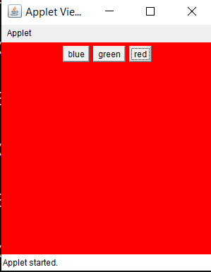

11. Create an applet in Java to change the background color.
import java.applet.*;
import java.awt.*;
import java.awt.event.MouseAdapter;
import java.awt.event.MouseEvent;
public class BgColor extends Applet{
public void init()
{
setBackground(Color.red);
Button r = new Button("red");
Button g = new Button("green");
Button b = new Button("blue");
add(b);
add(g);
add(r);
r.addMouseListener(new MouseAdapter()
{
public void mouseClicked(MouseEvent e)
{
setBackground(Color.red);
}
});
g.addMouseListener(new MouseAdapter()
{
public void mouseClicked(MouseEvent e)
{
setBackground(Color.green);
}
});
b.addMouseListener(new MouseAdapter()
{
public void mouseClicked(MouseEvent e)
{
setBackground(Color.blue);
}
});
}
}
/*
*/
OUTPUT
